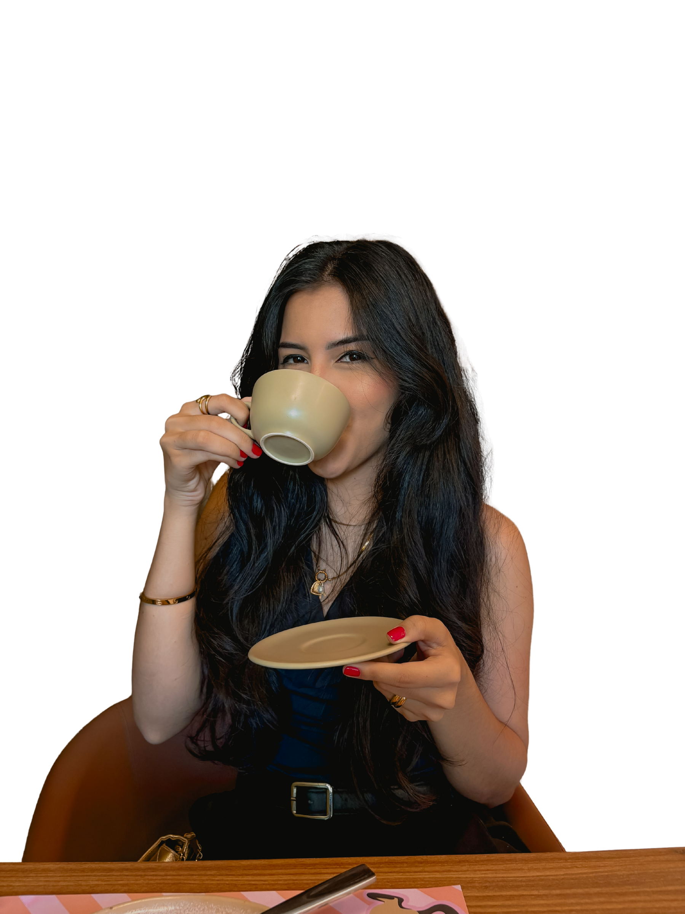
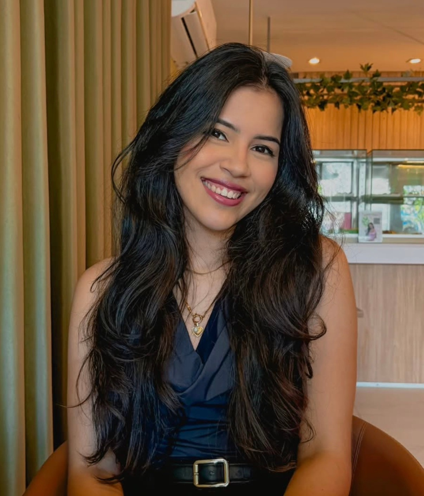
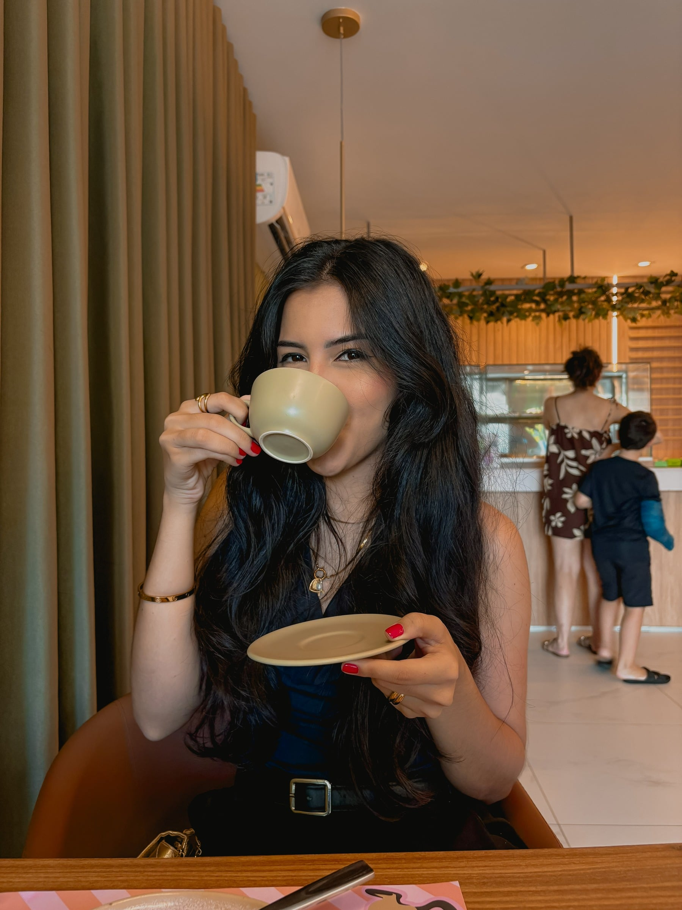

PORTFÓLIO


APRESENTAÇÃO · PUBLICIDADE & SOCIAL MEDIA
Sobre MIM
Eu gosto de transformar ideia em presença.
Sou publicitária em formação e Social Media por escolha. Misturo estratégia, criatividade e um olhar inquieto para transformar marcas em conteúdos que chamam atenção, comunicam e, principalmente, não passam despercebidos.
Porque fazer conteúdo qualquer pessoa faz. Eu quero fazer comunicação que tenha motivo para existir.
04
Cases Reais Publicados
360°
Estratégia, Design & Vídeo
2028
Publicidade · Uninassau
QUALIFICAÇÃO & ESPECIALIZAÇÕES
FORMAÇÃO
-
01
2028
Graduação em Publicidade e Propaganda | Uninassau
Previsão de Conclusão: 2028
-
02
Jun 2025
Marketing de Conteúdo - Sebrae
Carga horária: 2 horas | Conclusão: Junho 2025
-
03
Fev 2026
Social Media PRO - Mlabs
Carga horária: 1h | Conclusão: fevereiro 2026
-
04
Jul 2026
Monitoramento, métricas e inteligência do mercado - Berlim digital
Carga horária: 9h | Conclusão: Julho 2026

ESPECIALIDADES · PROCESSO COMPLETO
O QUE EU FAÇO?
Eu penso, crio e coloco a comunicação para acontecer.
Desenvolvo estratégias de conteúdo, planejo pautas, crio o design, faço captação e edição de vídeos, conectando cada entrega a um objetivo, e não apenas a um calendário de posts.
- 01 Estratégia de conteúdo orientada a objetivo
- 02 Planejamento de pautas e formatos
- 03 Design das publicações e identidade digital
- 04 Captação em campo e direção de gravação
- 05 Edição dinâmica de vídeos e Reels
CASE STUDY 01 / 04 · JURÍDICO & CONTEÚDO
Ver os 3 Reels editados para este projeto ↓
PROJETO 01
Frutuoso Advocacia
Desenvolvi a estratégia de conteúdo, criei o design das publicações, participei da captação de conteúdos e realizei a edição dos vídeos.
Também trabalhei diferentes formatos e abordagens para transformar temas jurídicos complexos em conteúdos mais acessíveis, relevantes e interessantes para o público.
O trabalho de conteúdo passou a contribuir diretamente para a geração de oportunidades comerciais para o escritório, levando usuários das redes sociais ao contato com a equipe e à contratação dos serviços.
AUDIOVISUAL · REELS 9:16
EDIÇÃO DE VÍDEO
Frutuoso Advocacia
Alguns dos vídeos que produzi e editei para o projeto, explorando ritmo, narrativa e linguagem visual para tornar a comunicação mais dinâmica e relevante nas redes.
Ritmo & Cortes
Legendas Dinâmicas
Narrativa Jurídica
CASE STUDY 02 / 04 · BELEZA & E-COMMERCE
PROJETO 02
Lins Cosmetics
Fui responsável pela produção de conteúdo da marca, desde a fotografia dos produtos e criação dos vídeos até a edição e desenvolvimento das peças para as redes sociais.
Cada conteúdo era pensado estrategicamente para fortalecer o posicionamento da marca, valorizar os produtos e, principalmente, gerar mais vendas.
Fotografia de Produtos
Criação & Edição de Vídeos
Design de Feed
Campanhas Sazonais
PROJETO 03
Ceress Idioma
CASE STUDY 04 / 04 · DIREÇÃO VISUAL & MOODBOARD
PROJETO 04
Momentur
A Momentur já possuía uma proposta e uma identidade visual definidas, mas precisava de mais coerência e personalidade na comunicação digital.
A partir disso, desenvolvi uma direção visual para o Instagram, trabalhando paleta de cores, tipografia, composição, referências visuais e linguagem estética.
O objetivo foi transformar os atributos da marca, como exclusividade, experiência e conexão, em uma identidade visual capaz de transmitir seu posicionamento de forma mais clara e consistente.
#FCE889
#FCE68F
#E799C6
#64317F
#F4F4F4
CONTATO · NOVOS PROJETOS & OPORTUNIDADES
VAMOS TIRAR ESSA IDEIA DO PAPEL?
Se você procura alguém para pensar estratégia, criar conteúdo e transformar ideias em comunicação que faz sentido, vamos conversar.